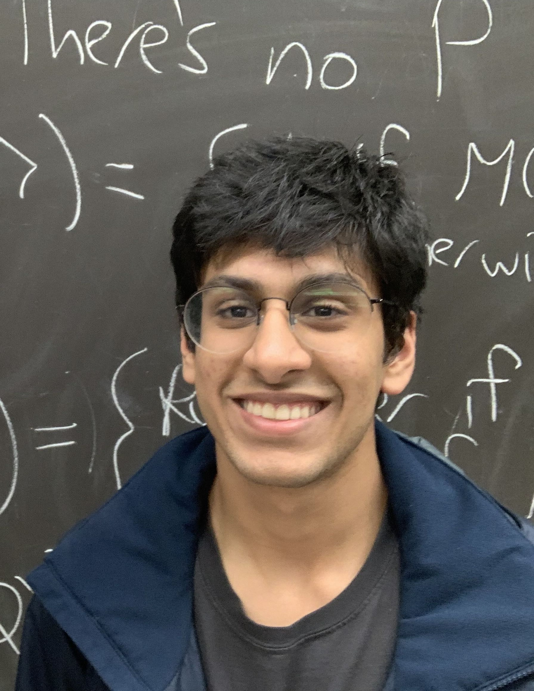

Advay Vyas
University of Texas at Austin
“If I have seen further than other men, it is by standing on the shoulders of giants.” - Sir Isaac Newton

Hey! My name is Advay and I'm a Statistics & Data Science +
Mathematics
sophomore at the University of Texas at Austin. My academic interests include
statistical theory, machine learning, mathematical modeling, game theory,
graph theory, and pure mathematics.
I also enjoy subjects like the stock market, economics, modern history,
and political science. I'm always looking to learn new things and expand my horizons!
In my free time, I love to read novels,
bike, play football & basketball, watch the Texas Longhorns & Dallas Cowboys,
and browse random Wikipedia articles!
Also, here is my CV.